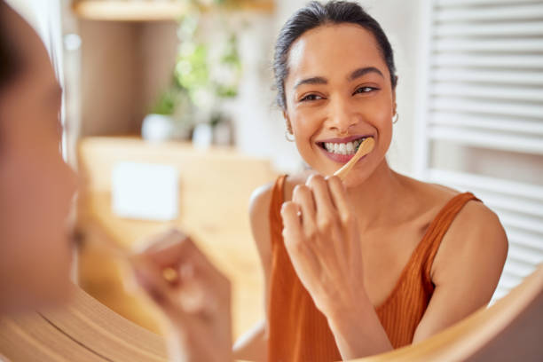
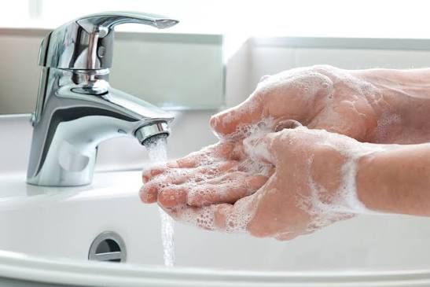
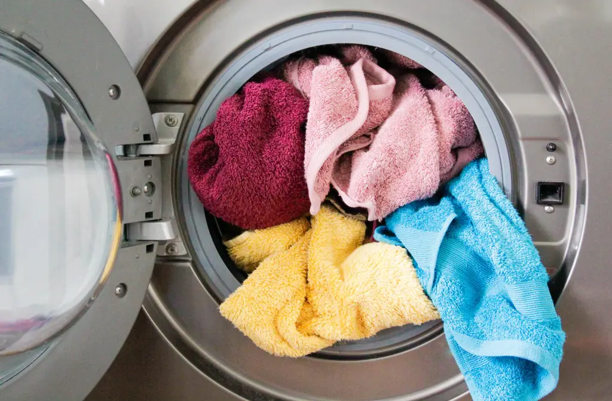
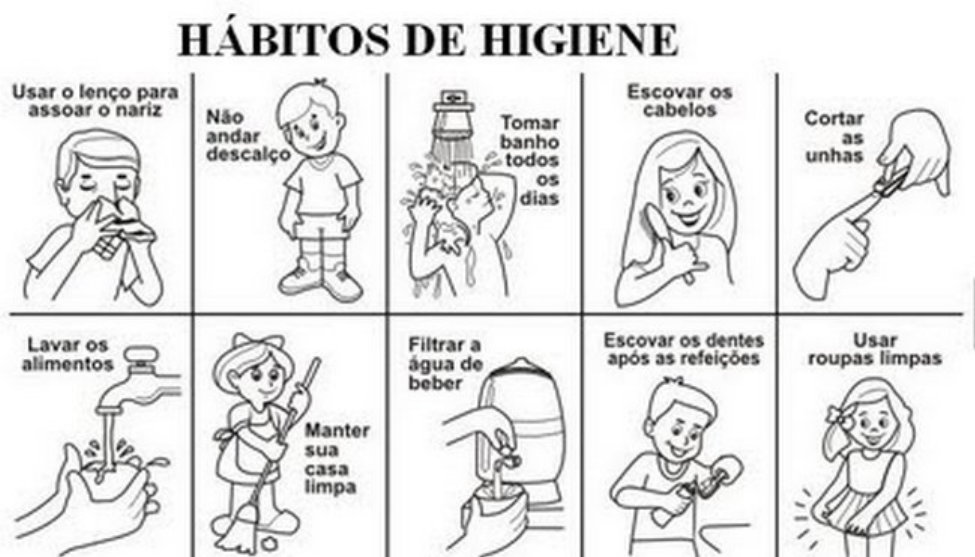
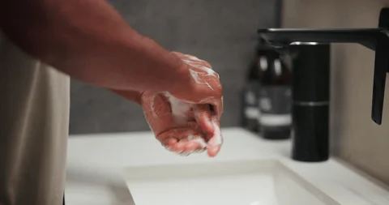
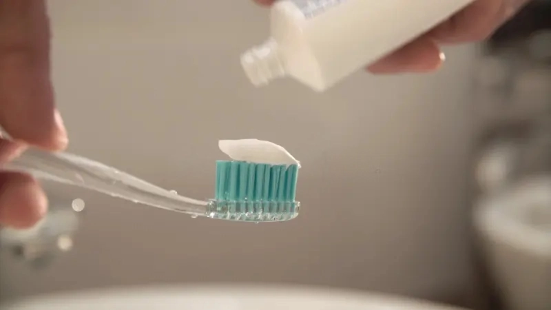
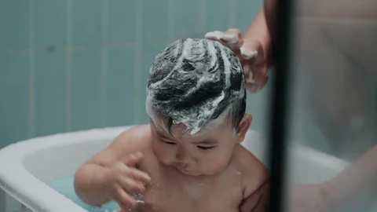

Prevenção
Ajuda a prevenir alguns problemas de saúde.
Neste trabalho vamos conversar sobre hábitos simples de higiene que ajudam a cuidar do corpo e da saúde no dia a dia.
Higiene pessoal é o conjunto de cuidados diários para manter o corpo limpo e saudável.
Ajuda a prevenir alguns problemas de saúde.
Ajuda a reduzir a transmissão de microorganismos.
Contribui para o bem-estar e a autoestima.
São cuidados que fazem parte da rotina diária.
O banho é um dos cuidados básicos da higiene pessoal.

Não basta lavar; secar bem também faz parte do cuidado.
Cuidar da boca faz parte da higiene diária.

Lavar as mãos é um hábito importante em vários momentos do dia.

Pequenos hábitos ajudam a manter a rotina de higiene organizada.
Manter os cabelos limpos.
Manter as unhas limpas e cortadas.
Evitar roer as unhas.
Não compartilhar itens pessoais, como escovas e pentes.
Além do corpo, os objetos usados diariamente também merecem atenção.

A puberdade traz mudanças no corpo que fazem parte do crescimento.
Pode haver aumento do suor e do odor corporal.
A pele pode ficar mais oleosa e podem aparecer espinhas.
O crescimento de pelos faz parte das mudanças da puberdade.
A menstruação pode fazer parte das mudanças do corpo durante a adolescência.
A menstruação é uma mudança natural do corpo.

Escovas de dentes ou toalhas.
Não ficar muito tempo com roupas molhadas ou suadas.
Evitar produtos que possam causar irritação.
Não fazer brincadeiras ou constranger alguém por causa de mudanças no corpo.
Confira o vídeo e as imagens para entender melhor alguns dos cuidados de higiene.
Vídeo mostrando como lavar as mãos corretamente com água e sabão.
Uma representação simples do hábito de lavar as mãos.

Visual para reforçar a importância da limpeza das mãos.

Imagem temática para a seção de cuidados com a boca.

Cuidados de higiene no dia a dia.
Escolha uma resposta e veja na hora se você acertou.
É importante lavar as mãos depois de usar o banheiro.
Compartilhar escova de dentes é normal.
Escolha os hábitos que você já pratica ou que quer melhorar.
Com hábitos simples, podemos cuidar melhor do nosso corpo e conviver com outras pessoas.